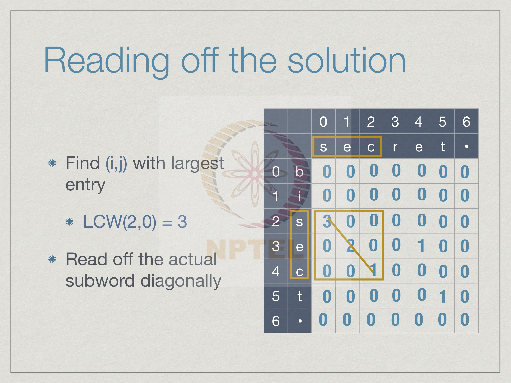
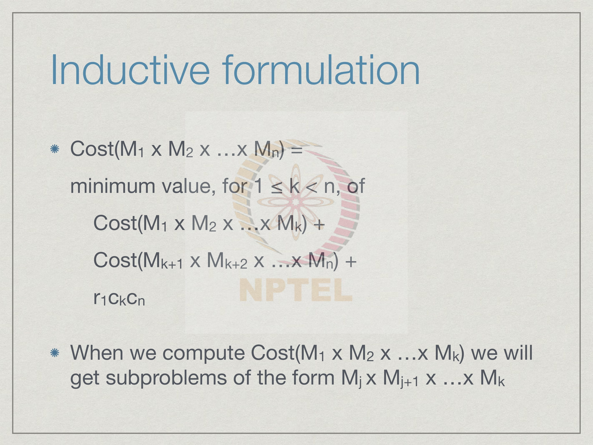

Week 8
8.1 Memoization and dynamic programming
We saw earlier that inductive definitions often provide a nice way to get a hold of the functions we want to compute. Now we are familiar with induction for numbers. For instance, we can define the factorial function in terms of the base case f of 0, and in terms of the inductive case saying f of n is n times factorial of n minus 1. What we saw is we can also define inductively functions on structures like lists, so for instance, we can take as the base case an empty list, and in the inductive case, we can separate the task of sorting of list into doing something with the initial element and something with the rest. Insertion sort can be defined in terms of insert function as follows. So, isort of the base case for the empty case just gives us the empty list. And then if you want to sort a list with n elements, we pull out the first element right and then we insert it into the result of inductively sorting the rest. This is a very attractive way of describing the dependency of the function that we want to compute the value that we are trying to compute on smaller values, and it gives us a handle on how to go about computing it.
The main benefit of an inductive definition is that it directly yields a recursive program. So, we saw this kind of a program for factorial which almost directly follows a definition saying that f of 0 is 1 and f of n is n into f n minus 1. So, we can just directly read it talk more or less and translate it. The only thing we have done is we have taken care of some error case, where if somebody feeds a negative number, we will still say 1, and not go into a loop.
In general, when we have such inductive definitions, what we do is we have sub
problems that we have to solve in order to get to the answer we are trying to reach. So,
for instance, to compute factorial of n, one of the things we need to do is compute
factorial of n minus 1. So, we call factorial of n minus 1 as sub problem of factorial n.
Now in turn factorial of n minus 1 requires us to compute factorial n minus 2, so actually
if you go down the chain, the factorial n sub problems are all the factorials for values
smaller than n. Similarly, for insertion sort, in order to sort the full list, we need to sort
all the elements excluding the first one what is called the tail of the list, and in turn we
need to sort its tail and so on.
In general, when we do insertion sort we will find that we need to sort things a segment
of the list. So, we can in general talk about x i to x j. And in all these cases, what the
inductive definition tells us is how to compute the actual value of f for our given input y
by combining the solutions to these sub problems; for instance, in factorial we combine it
by multiplying the current input with the result of solving it for the next smaller input.
For insertion sort, we combine it by inserting the first value into the result of solving the
smaller input that is the tail of the list.
Let us look at one particular problem, which will highlight an issue that we have to deal with when we are looking at inductive specifications and naively translating them into programs. The Fibonacci numbers are a very famous sequence which were invented by Fibonacci, and they occur in nature and they are very intuitive and most of you would have seen them. The Fibonacci numbers are 0, 1 and then you add. So, 1 plus 0 is 1, 1 plus 1 is 2, 3, 5 and so on. So, you just keep adding the previous two numbers and you go on. The inductive definition says that 0th Fibonacci number is 0; the first Fibonacci number is 1; and after that for two onwards, the nth Fibonacci number is obtained by sub adding the previous two. The Fibonacci number 2 is Fibonacci 1 plus Fibonacci 0. As before we can directly translate this into an inductive into a recursive program. We can just write a python function fib which says if n is 0 or n is 1, you return the value n itself. So, if n is 0 return 0, if n is 1, we return 1. Otherwise, you compute the value by recursive to recursively calling Fibonacci on n minus 1 and n minus 2, add these two and return this value. Here is the clear case of an inductive definition that has a natural recursive program extracted from it.
Let us try to compute a value and see what happens. So, supposing we want to compute
Fibonacci of 5 using this definition. So, Fibonacci of 5, we will go into the else clause
and say we need to compute Fibonacci of n minus 1 namely 4 and n minus 2 namely 3.
As Fibonacci of 5, leaves us with two problems to compute, Fibonacci of 4 and
Fibonacci of 3. So, we do these in some order; let us go left to right. So, we pick
Fibonacci of 4, and this in turn will require us to compute Fibonacci of 3 and Fibonacci
of 2 by just applying the same definition to this value.
Similarly, we go to the left of the two sub problems Fibonacci of 3 requires 2 and 1; 2
requires 1 and 0. Now for 1 and 0 fortunately we can exit without making a recursive
call; if n is equal to 0 or n is equal to 1, we just return the value. So, we get back
Fibonacci 1 as 1 and Fibonacci 0 as 0. So, with this, we can complete the computation of
Fibonacci 2, we get value is 1 plus 0 in other words 1. So, Fibonacci of 2 is 1.
Now, we are back to Fibonacci of 3. So, we have computed for Fibonacci of 3, the left
case Fibonacci of 2. Now we have to compute the right case. And once again we find the
Fibonacci of 1 being a base case it gives us 1, and now we can combine this and get
Fibonacci of 3 is 2.
Now, we are back to Fibonacci of 4. And we have computed the left side of Fibonacci of
4. So, we need to compute the right side. And now what happens is we end up having to
compute Fibonacci of 2 again, even though we already know the value. We naively have
to execute Fibonacci of 2 call 1 and 0, again propagate the values 1 and 0 back up add
them up and get 1. Now, we can compute Fibonacci of 4 is 2 plus 1 3.
And now we are finally, back to the original call where we had to compute Fibonacci of
4 and Fibonacci of 3. So, we are done with 4. Now, we want to do Fibonacci of 3. Notice
that we have already computed Fibonacci of 3, but this will blindly require us to call this
function again. So, we will again have to execute this full tree, go all the way down, go
all the way up and eventually Fibonacci of 3 will of course, give us the same answer
namely 2, which we already knew, but we would not take exploit or we would not take
advantage of the fact that we knew it. And in this way, we get 3 plus 2 and therefore,
Fibonacci of 5 is 5.
The point to note in this is that we are doing many things again and again. In this particular computation, the largest thing that we repeat is Fibonacci of 3. So, as a result of this re-computation of the same value again and again, though we in principle only need n minus 1 sub problems. If we have fib of 5, we need to fib of 4, fib of 3, fib of 2 and so on. N subproblems, if we don't include fib of 0, but some of these sub problems like in this case Fibonacci of 3, we compute repeatedly in a wasteful way. As a result, we end up solving an exponential number of solve sub problems even though there are only order n actual problems to be solved.
So, what we want to do is move away from this naive recursive implementation of an inductive definition, and try to work towards never reevaluating a sub problem. This is easy to do, if we could only remember the sub problems that we have solved before, then all we have to do is look up the value we already computed rather than recompute it. So, what we need is a kind of a table, a table where we store the values we have computed and before we go and compute a value, we first check the table. If the table has an answer, we take the table's answer and go ahead. If the table does not have an answer then we apply the recursive definition compute it, and then we add it to the table. This table is normally called a memory table to memorize; and from this, we get this word memoization. It is actually memo and not memorization; memoization in the sense of write yourself a memo, memo is like a reminder, write yourself a reminder that this has been done before. Memoization is the process by which when we are computing a recursive function, we compute the values one at a time, and as we compute them we store them in a table and look up the table before we recompute any.
Here is how a computation of Fibonacci of 5 would go, if we keep a table. This is our
table here right. So, we have a table where in some order, it does not really matter for
now; in some order as and when we find Fibonacci of k for some k, we just record it.
And notice that this table is empty, even though we know the base case of Fibonacci of 0
and Fibonacci of 1 are 0 and 1 respectively, we do not assume you know it, because it
will come out as the first time we hit the base case it will come out of the recursive
definition.
Let us see how it goes right. So, we start Fibonacci of 5 as usual, it says do 4 and 3, 4
says do 3 and 2, 3 says do 2 and 1, 2 says do 1 and 0. And now from our basic case, the
base case in the function, we will get back that fib of 1 is 1. So, we store this in the table,
this is the first value we have actually computed. Notice we did not assume we knew it,
when we came to it in the base case; we put it into the table. Same way, fib of 0 is 0 we
did not know it before; we put it in the table.
Now we come up and we realize that fib of 2 is now available to us, it is 1 plus 0 is 1. So,
we store that in the table. We say for k equal to 2, fib of k is 1. Now we come back to fib
of 3, and now we go down and it asks us to compute fib of 1 again. Now although this
does not take us any work, because it is a base case we do not actually exploit that fact.
We first look in the table and say is there an entry for k equal to 1, yes there is and so we
pick it up.
We highlight in orange the fact that this value was actually not recomputed, but looked
up in the table, so from 1 plus 1, we now have Fibonacci of 3 is 2. Now we go back up to
Fibonacci of 4, and it asks us to compute the second half of its sub problems, namely
Fibonacci of 2. Once again we find that there is an entry for 2 in our table. So, we mark it
in orange, and we just take the value from the table without expanding and computing
the tree again as we had done before when we did the naive computation. Now, 2 plus 1
is 3, so we have Fibonacci of 4.
So, we have to now go back and compute the other branch Fibonacci of 3, but once again
3 has an argument k is in our table. So, we have an entry here for 3. So, we can just look
up Fibonacci of 3 and say oh, it is two. So, once again we mark it in orange. And so now,
we have Fibonacci of 5 is 3 plus 2 and that is 5, and then now this is a new value, so we
enter that.
Notice therefore, that every value we computed, we expanded the tree or even looked up
the base case only once according to the function definition. Every subsequent time, we
needed a value we just looked it up in the table, and we can see that the table grows
exactly as many times as much as there are sub problems to be solved and we never
solved a sub problem twice in the sense of computing it twice. We solved it by looking at
the table.
This is a very easy step to incorporate into our Fibonacci table, the Fibonacci functions. So, we just add this red code. The green lines are those ones we have already had before. Now what Fibonacci says is, the first thing you do when you get a number is try and look up the table. If there is a value Fibonacci of n, which is defined then return that value; otherwise, we go through the recursive computation. This is the usual computation which will make a recursive call and eventually come up with a new value which is the value for this particular n. So, before we return this value back as a result of this function, we store it in the table. Henceforth, if this value n is ever invoked again, we never have to look up the thing we never have to compute it; it will be in the table right. It is very simple as we said when you get an argument n for which you want to compute the function, you first check the table, if it is there in the table you do not do anything more you just return the table value. If it is not in the table, you apply your recursive definition to compute it, just like you would normally. Having computed it you first store it in the table, so that future accesses to this function will work without having to do this recursion and then you return the value you got.
This can work for any combination of arguments. You just need a table, in python terms; you just need a dictionary for every combination of arguments if that value has been computed before that key will be there in our table. This table in general in python would be a dictionary and not a list because the arguments could be any particular values. They could some could be string, some could be numbers, they need not be continuous that is all. We basically for given the particular combination of arguments, we look up whether that combination of keys is there in the dictionary if so we look it up and return it. Otherwise, we compute a new value for this combination, store it and then return it. So, we have glossed over little few things for instance typically where if you want to really write this properly in python way we have to use some exceptions and all that, but this is more or less the skeleton of what we need to do.
This brings us to the main topic that we want to do this week in a couple of lectures
which is called dynamic programming. So, dynamic programming is just a strategy to
further optimize this memoized recursion. This memoized recursion tells us that we will
store values into a table as and when they are computed. Now it is very clear that in an
inductive definition, we need to get to the base case and then work ourselves backwards
up from the base case, to the case we have at hand. That means, there are always some
values some base values for which no further values need to be computed; these values
are automatically available to us.
We have some problems which have sub problems, and some other problems which have
no sub problems. If a problem has a sub problem, we cannot get the problem, we cannot
get Fibonacci of five unless we solve its sub problems, Fibonacci 4 and 3. But if we have
a base case that Fibonacci of 1 or Fibonacci of 0, we do not have any sub problems, so
we can solve them directly. This is a kind of dependency. So, we have to solve the sub
problems in the dependency order, we cannot get something which is dependent on
something else until that something else has been solved, but a little thought tells us that
this dependency order must be acyclic, we cannot have a cycle of dependency.
So, if one value it is like 5 depends on 3, 3 depends on 1, and 1 again depends on 5,
because there will be no way to actually resolve this right. There will always be a starting
point, and we can solve the sub problems directly in the order of the dependencies
instead of going through the recursive calls. We do not have to follow the inductive
structure, we can directly say ok, tell me which are all the sub problems which do not
need anything solve them, which are all the ones which depend only on these solve them
and so on. This gives as an iterative way.
If we look at the sub problem for Fibonacci of 5, for example, it says that it requires all
these sub problem but the dependency is very straightforward; 5 depends on 4 and 3; 4
depends on 3 and 2; 3 depends on 2 and 1; 2 depends on 1 and 0; and 0 and 1 have no
dependencies. So, we can start at the bottom, and then work ourselves up, we can say
Fibonacci of 0, needs no dependencies, so let me write a value for it. Fibonacci of 1
needs no dependency, so let me write a value for it.
Now we see that for Fibonacci of 2 both the things that it needs have been computed. So,
I can write fib 2 in the table directly without even going to it from 5, I am not coming
down from 5, we are just directly filling up the table, just keeping track of which values
depend on which values. So, assuming that we know the function, we can calculate this
dependency and just compute that values as and when the dependencies are satisfied.
Now, we have 1 and 2. So, we can compute Fibonacci of 3. So, we just compute it. We
have 3 and 4, so we can compute I mean 2 and three. So, we can compute Fibonacci of 4,
so we compute. And finally, we have 2 and fib 3 and fib 4, so we can get fib 5. This
value as you can see becomes now a linear computation, I can just walk up from 0 to 5
and fill in the values. In fact, this is what we do by hand.
When I can you ask me for the tenth Fibonacci number, I can write it out. I can say 0. 0
plus 1 is 1, and then 1 plus 1 is 2, 2 plus 1 is 3, 5, 8, 13, 21, 34, so clearly it is not a very
complicated process as it seems to be when we have this exponential recursion. I can do
it on the fly more or less, because all I have to do is keep generating the values in a
sequence, and this is the virtue of dynamic programming. It converts this recursion into a
kind of iterative process, where you fill up the values that you would normally fill up in
the MEM table by recursion to fill them up iteratively starting with the ones which have
no dependencies.
Then the dynamic programming version of Fibonacci is just this iterative blue. So, it says that you start from with value 0 and 1 to be the values themselves what we earlier said was that if n is 0 or 1 then you return n. So, here we just store it into the table directly; we say fib table of 0 is 0, fib table of 1 is 1. And then we walk from 2 to n, so in python notation the range end is n plus 1; and at each stage, we just take the ith value to be the sum of the i minus 1, i minus 2 values which we have already computed because we are going in this particular order because we have recognized the dependency order goes from 0 to n. And finally, the answer we need is the nth entry, so we just return that.
To summarize, the basic idea to make naïve recursion more efficient is to never compute
something twice. And to never compute something twice, we store the values we
compute in what we call a memo table this is called memoization. And we always look
up the table before we make a recursive call.
Or this can be further optimized, so we avoid making recursive calls altogether and we
just directly fill in the table in dependency order which must be acyclic otherwise this
sub problem will not be solvable. And this converts the recursive evaluation into an
iterative evaluation, which is often much more efficient.
8.2 Grid paths
In the last lecture we looked at how to make iterative or inductive definitions more
efficient than naïve recursion, and we saw memoization and dynamic programming as
tools to do this.
Now, let us look at a typical problem and see how we can apply this technique. So, here
is a problem of grid paths. So, we have a grid here, you can imagine there are roads
which are arranged in a rectangular format. We can imagine that the intersections are
numbered. So, we have (0, 0) at the bottom left corner and in this case, we have (5, 10)
because going across from left to right we have 1, 2, 3, 4, 5 different intersections and 10
going up. So, we have at (5, 10) the top right corner.
If these are roads the constraint that we have is that one can only travel up or right. So,
you can go up a road or you can go right, but you cannot come down. This is not
allowed. These are one way roads which goes up and right, and what we want to ask is
how many ways there are to go from the bottom left corner to the top right corner. So,
we want to count the number of what are called grid paths. So, a grid path is one which
follows this right. So, we want to know how many such different paths are there which
take us from (0, 0) to (5, 10) only going up or right.
So, here is one path drawn in blue.
Here is a different path drawn in red and notice that these 2 paths actually, start in different directions from the first point and they never meet except with the target. They do not overlap at all. On the other hand we could have paths which overlap. This yellow path overlaps a part of its way with the blue path in this section and it also overlaps with the red path in 2 portions. There are many different ways in which we can choose to make this up and right moves and the question is, how many total such different paths are there?
There is a very standard and elegant combinatorial solution. So, one way of thinking
about this is just to determine, how many moves we have to make. We have to go from 0
to 5 in one direction and 0 to 10 in the other direction. So, we have to make a total
number of 5 horizontal moves and 10 vertical moves, in other words every path no
matter which direction we started and which move, which choice of moves we make
must make 15 steps and of these 5 must be horizontal steps and 10 must be vertical steps,
because they all take us from (0, 0) to (5, 10).
So, all we have to do since we know that these 5 steps are horizontal and 10 are vertical
is to just demarcate which ones are horizontal and which are vertical. Now once we
know which ones are horizontal we know what sequence they come in because the first
horizontal step takes us from column 0 to column 1, second 1 takes us from one to 2. So,
we cannot do it in any order other than that.
So, we have in other words we have 15 slots, where we can make moves and then we
just say first we make an up move, then we make a right move then we make an up move
then make another up move and so on. So, every path can be drawn out like this as 10 up
moves and 5 right moves and if we fix the 5 right moves then automatically all the
remaining slots must be 10 up moves or conversely.
It is either 15 choose 5, it is the way of choosing 5 positions to make the right move out
of the 15, and it turns out that the definition of 15 choose 5 is clearly the same as 15
choose 10 because we could also fix the 10 up moves and the definition is basically... if
you know the definitions... then n choose k is n factorial by k factorial into n minus k
factorial.
This k and n minus k basically says that 15 minus 5 is 10. So, we get a symmetric
function in terms of k and n minus k. In this case we can apply this formula if you would
like to call it that and directly get that the answer is 3003. There does not appear to be
much to compute other than writing out large factorials and then seeing what the number
comes.
But the problem becomes more interesting, if we constrain it by saying that some of
these intersections are blocked for instance, supposing there is some road work going on
and we cannot go through this intersection (2, 4). This is the intersection 2 comma 4
second column and the fourth row counting from below. It’s actually 2 comma 3, but 1,
2, 3, 4 yeah 2 comma 4. Now, if we cannot go through this then any path which goes
through this particular block intersection should no longer be counted. Out to those 3003
some paths are no longer valid paths.
For instance, in the earlier thing the blue path that we had drawn actually goes through this, the red path does not, where the yellow path overlapped with the blue path unfortunately in this bad section. It also passes through this. There are some paths which are allowed from the 3003 and some which are not. So, how do we determine how many paths survived this kind of block.
So, again we can use a combinatorial argument in order to be blocked a path must go to (2, 4) and then from (2, 4) to (5, 5). If we could only count how many paths go from (0, 0) to (2, 4) and then how many paths go from (2, 4) to (5, 10), these are all the bad paths. So, we can count these bad paths and subtract them from the good paths. How do we count the bad paths well we can just solve a smaller version of the problem. So, we have an intermediate target. So, we solve this grid how many paths go from here to here, how many paths go from here to here. So, from (0, 0) to (2, 4) we get 4 plus 2 remember it 10 plus 5 it was a curve or get, 10; 4 plus 2 choose 2. So, we get 15 and from here to here the difference is that we have to do in both directions 3 and so, we have to go sorry we have to go up 6 and we have to go right 3, we are at (2, 4). So, we have to go from 4 to 10 and from 2 to 5. So, we have 6 plus 3 choose 3, 84 ways of going from (2, 4) to this and each of the ways in the bottom, can be combined with a way on the top. So, we multiply this and we get 1260 paths which pass through this bad intersection, we subtract this from the original number 3003 and we get 1743 paths which remain. So, a combinatorial approach still works.
Now, what happens if we put 2 such intersections? So, we will you can do the same thing we can count all the parts which get blocked because of the first intersection, we can count all the paths which pass through in this case (4, 4) is the second intersection which has been blocked. So, we can count all these parts which pass through (4, 4). This we know how to do: we just computed it for (2, 4), but the problem is that there are some paths like the yellow paths which pass through both (2, 4) and (4, 4). So, we need a third count we need to count paths which pass through both of these and make sure we do not double count them. So, one way is that we just add these back. This is something which is called in combinatorics inclusion and exclusion. So, when we have these overlapping exclusions, then we have to count the overlaps and include them back. We have to keep doing this step by step. If we have 3 holes we get an even more complicated inclusion exclusion formula and it rapidly becomes very complicated even to calculate the formula that we need to get. Is there a simpler way to do this?
Let us look at the inductive structure of the problem, suppose we say we want to get in one step to intersection (i, j). How can we reach this in one step since our roads only go left to right and bottom to top, the only way we can reach (i, j) is by taking a right edge from it’s left neighbor. So, we can go from (i-1, j) to (i, j) or we can go from below from (i, j-1) to (i, j). Notice that if a path comes from the left it must be different from a path that comes from below. So, every path that comes from the left is different from every path that comes from below. So, we can just add these up.

In other words if we say that paths(i, j) is the quantity we want to compute, we want to count the number of paths from (0, 0) to (i, j). These paths must break up into 2 disjoint sets those which come from the left which recursively or inductively if you prefer to say is exactly the quantity paths(i-1, j). How many paths are there which reach (i-1, j) every one of these paths can be extended by a right edge to reach (i, j) and, they will all be different similarly paths(i, j-1) are all those paths which come from below, because they all reach the point just below (i, j) from there each of them will be extended in a unique way to (i, j)
This gives us our simple inductive formula, paths(i, j) is just the sum of paths(i-1, j) and
paths(i, j-1). Then we need to of course, investigate the base cases: in this case the real
base case is just paths(0, 0): in how many ways can I go from (0, 0) and just stay in (0,
0)? Well there is only one way, it is tempting to say 0 ways, but it is not 0 ways its one
way otherwise nothing will happen. So, we have one way by just doing nothing to stay in
(0, 0) and if we are now moving along the left column, if you are moving along the left
column then there are no paths coming from its left because we are already on the
leftmost column.
So, all the paths to (0,j) must be extensions of paths which have come from below up to
(0,j-1). Similarly if you are on the bottom row there is no way to come from below
because we are already on the lowest set of roads. So, paths(i, 0) can only come from the
left, from paths(i-1, 0).
This gives us a direct way to actually compute this even with holes because, the only
difference now is that if, there is a hole we just declare that no paths can reach that place.
So, we just add an extra clause which says paths(i, j) is 0 if there is a hole at (i,j);
otherwise we use exactly the same inductive formulation and now what happens is, if I
have a hole below me, if I have a hole below me, no paths can come from that direction
because by definition paths(i, j) at that point is 0.
So, once again if we now apply this and do this using the standard translation from the
inductive definition to a recursive program, we will find that we will wastefully
recompute the same quantity multiple times for instance paths(5,10). If we have paths(5,
10), it will require me to compute this and this.
These are the 2 sub problems for paths(5, 10), namely (4, 10) and (5, 9) but, in turn in
order to compute (4, 10) I will have to compute whatever is to its left and below it and in
order to compute (5, 9) I will also have to compute what is to its left and below it and
now what we find is that this quantity namely (4, 9) is computed twice, once because of
the left neighbor of (5, 10) and once because of the neighbor below (5, 10).
So, as we saw before we could use memoization to make sure that we never compute
(i,j) twice by storing a table i comma j, and every time we compute a new value for i
comma j we store it in the table and every time we look up, we need to compute one we
first check the table, if it is already there we look it up, otherwise we will compute it and
store it, but since we know there is a table and we know what the table structure is
basically it is all entries of the form i comma j. We can also see if we can fill up this
table iteratively by just examining the sub problems in terms of their dependencies.
In general a node the value depends on things to it left and below. If there are no
dependencies, it must have nothing to its left and nothing below and there is only one
such point namely (0, 0). This is the only point which is the base case which has nothing
to its left and nothing below so its value is directly read. So, we start from here.
Remember that the base value at (0, 0) is one, and now once we have done this it turns
out: you remember the road dependency, it said (i, 0) is (i-1, 0). So, we can fill up this,
because this has only one dependency which is known now. In this way I can fill up the
entire row and say that all along this row there is only one path namely the path that
starts going right and keeps going right. Now we can go up and see that this thing is also
known because, it also depends only on the value below it and once that is known then
these 2 are known.
So I can add them up; remember the value at any position is just the value to its left plus
the value to its bottom and now I start to get some non trivial values, and in this way I
can fill up this table row by row and at each point when I come to something I will get
the fact with the dependency unknown. The next row looks like this and the next row.
Now we come to the row with holes. So, for the row with holes, wherever we hit a hole
instead of writing the value that we would normally get by adding its left and bottom
neighbour we deliberately put a 0 because; that means, that no path is actually allowed
propagating through that row.
Now, when we come to the next row, the holes will automatically block the paths
coming from the wrong direction. So, here for instance we have only 6 paths coming
from the left because we have no paths coming from below similarly we have 26 paths
coming from the left and no paths coming from below. This is how our inductive
definition neatly allows us to deal with holes and from that inductive definition we
recognize the dependency structure and we imagine the memo table and now we are
filling up this memo table row by row so that at every point when we reach an (i, j) value
its dependent values are already known.
So, we can continue doing this row by row, and eventually we find look there are 1363
paths which avoid these two.
So, we could also do the same thing in a different way instead of doing the bottom row,
we can do the left column and the same logic says, that we can go all the way up then we
can start in the second column, go all the way up and do this column by column and not
unexpectedly, we should get the same answer. There is a third way to do this.
So, once we have one at (0, 0) then we can fill both the first element above it and the first element to its right. So, we can do this diagonal, now notice that any diagonal value like this one has both its entries. This has only one entry, this also. So I can now fill up this diagonal. I can go one more diagonal, then I can go one more diagonal. So, we can also fill up this thing diagonal by diagonal. The dependency structure may not require us to fill it in a particular way we might have very different ways to fill it up, all we want to do is systematically fill up this table in an iterative fashion not recursively we do not want to call f of I, j and then look at f of i minus 1, j. We want to directly say when we reach (i, j) we have the values we need, but the values we need could come in multiple different orders. So, we could have done it row wise, we could have done it column wise and here you see we can do it diagonally, but it does not matter so long as we actually get all the values that we need.
So, one small point, so we have said that we can use Memoization or we can use dynamic programming. One of the advantages of using dynamic programming is it avoids this recursive call. So, recursion we had mentioned earlier, also in some earlier lecture, comes with a price because whenever you make a recursive call, you have to suspend a computation, store some values, restore those values. There is a kind of administrative cost with recursion. So, actually though it looks like only a single operation and we call fib of n minus 1 or fib of n minus 2. There is actually a cost involved with suspending this operation, going there and coming back. So, saving on recursion is one important reason to move from Memoization to dynamic programming, but what dynamic programming does is to evaluate every value regardless of whether its going to be useful for the final answer or not. In the grid path thing there is one situation where you can illustrate this. Imagine that we have these obstacles placed exactly one step inside the boundary. Now, if we want to reach this its very clear that I can only come all the way along the top row or all the way up the rightmost column, there is no other way I can reach them. So, anything which is inside this these positions there is no way to go from here out. There is no point in counting all these values. We have this region which is in the shadow of these obstacles which can never reach the final thing. So, when we do memoization when we come back and recursively explore it will never ask us to come here because it will never pass these boundaries. On the other hand our dynamic programming will blindly walk through everything. So, it will do row by row, column by column and it will eventually find the 0s, but it will fill the entire n by n grid. In this case how many will memoization do? It will do basically only the boundary. It will do only order m+n.
So, we have a memo table which has only a linear number of entries in terms of the rows
and columns and a dynamic programming entry, which is quadratic; if both were n it will
be n squared, thus is 2n. This suggests that dynamic programming in this case, is
wastefully computing a vast number of entries. So n squared is much larger than 2n
581
remember. It will take us enormous amount of time to compute it, if we just count the
cost per entry, but the flip side is that each entry that we need to add to the memo table
requires one recursive call.
The reality is that these recursive calls will typically cost you much more, than the
wastefulness of computing the entire table. In general even though you can analyze the
problem and decide that memoization will result in many fewer new values being
computed than dynamic programming. It is usually sound to just use dynamic
programming as the default way to do the computation.
8.3 Longest common subsequence
We are in the realm of Inductive Definitions, Recursive Functions and Efficient Evaluation of these using memorization and dynamic programming.
So, we are looking examples of problems where the main target is to identify the inductive structure and once you identify the inductive structure then the recursive structure of the program becomes apparent from which you can extract the dependencies and figure out what kind of memo-table you have and how you will can iteratively using dynamic programming. This is something which comes to the practice and by looking at more examples hopefully the procedure become clearer, but the key thing to dynamic programming is to be able to understand the inductive structure. So, you need to take a problem, identify how the main problem depends on its sub parts and using this come up with the nice inductive definition which you can translate in to a recursive program. Once you have the recursive program then the memo-table and the dynamic programming almost comes out automatically from that. This is the problem involve in words. So, what you want to do is take a pair of words and find the longest common subword. For instance, here we have secret and secretary and secret is already also inside secretary and clearly secret is the longest word in secret itself. The longest subword that is common is the word secret and it has length 6. Let we move to the next think bisect and trisect then actually this should be isect that say which has length 5, similarly if we have bisect and secret then sec. When we say subword, of course we do not mean a word in the sense; we just mean a sequence of letters. So, s e c is the longest common subword in has length 3 and if you have two very different words like director and secretary, sometimes you might have only small things, for example, here r e and e c are, for examples of subword but there are really very long words which are common to the subword is only length 2.
Here is the more formal description right. So, supposing I have two words u and v. So, u is of length m and v is of length n and the number positions using python notation and number 0 to n minus 1, 0 to n minus 1 then what I want to do is able to start at a i and go k steps. So, i to i plus k minus 1 and b j to j plus k minus 1 such that, these two segments are identical, this is a common subword and we want to find the longest such common subword, what is the k, we do not even want to subword, will find that subword will be a byproduct. You first need to just find k, what is the length of the longest common subword of u n?
There is a brute force algorithm that you could use which is you just start at i and j in two word. In each word you can start a position i in u j in v and see how far you can go before you find they are not. So, you match a i and b j right. So, if a i and b j work then its fine. So, it should be b j and if a i and b j work then you go to a i plus 1 b j plus 1 and so on and whenever we find two letters which differ then the commons adverse starting at a j has ended and you so from i j I have a common subword of something. Now, among all the i js you look for the longest one and that becomes your answer. Now, this unfortunately is effectively now an n cube algorithm. We think of m and n can be equal technically m n squared because there are m times n different choices of i and j and in general I started i j and then I have to go from i to the end right and from j to the end. So, we have to do a scan for each i j in this scan in general adds up to an order, order n factor and so we have order m n squared or order n cube if you like.
Our goal is to find some inductive structure which makes this thing computationally
more efficient. So, what is the inductive structure? Well we have already kind of seen it
when can we say that there is a commons subword starting at i j of length k, the first
thing is that we need this a i to be the same as b j. So, I need this condition and now if
this is a commons subword of length k at i j then what remains of subword namely this
segment from i plus 1 to this and j plus 1 to this must also match and they must be in turn
be a k minus 1 length subword from here to there. So, we want to say that there is a k
length subword starting at i j if a i is equal to b j and from i plus 1 and j plus 1 there is a k
minus 1 length subword.
In other words, I can now write the following definition, I can say that the longest
common the length of the longest common subword l c w starting from i j. Well, if they
two or not the same if a i is not the same the same there is no common subword at all
because if I start from i immediately have two different letters. So, when the length is 0
otherwise I can inductively find out what is the longest common subword to may right
start i plus 1 start from j plus 1.
Find out what I can do from there and to word I can add one letter because this current
letter a i is equal to b j. So, I get one plus that and the base case of the boundary
condition is when one of the two words is empty right. If I have no letters left, if I have
gone i j I am looking at difference combinations i and j. So, if either i or j has reached the
end of the word then there is no possibility of a common subword at that point. So, when
we reach the end of one of the words say answer must be 0.
This gives us the following definitions. So, remember that u is actually has length m. So, it has 0 to m minus 1. So, what we will do is, we will add a position of m to indicate that we have crossed the last letter. Similarly, v has 0 to n minus 1 has valid positions. So, we will use in this 0 to n. So, if i becomes m or j becomes n it means that that corresponding index has gone beyond the end of the word right. So, this should be m and this should be n. We have that if you reach m then lcw of n comma j 0 is 0 because we have gone past the length u. Similarly, if you reach n, but lcw of i comma n is 0 because you gone past the length of v and if you are not gone past the length, if you are somewhere inside the word in a valid position then the length is going to be 0 if the two positions are not the same. If a i is not equal to b j, otherwise inductively I compute the length from i plus 1 and j plus 1 and add one to it. this is the case when a i is equal to b j because that segment i can extend by. So, this is just stating in an equation form the inductive definition that we purposely earlier.
So, here we saw example for bisect and secret. We have position 0 to 5 and then we have the 6 position indicating the end of the word and now remember that the way our inductive definition was phrased i j depends only on i plus 1 j plus 1. So, actually the dependencies at this ways to the arrows are indicating that and in order solve this I need to solve this first. The value at 2 comma 3 depends on the value 3 comma 4. In order to solve this I do not need to solve anything because everything once i. So, in order to solve this I only need to so anyway. We can basically, we have this simple thing which says that the corner and the actually the right column and the bottom thing do not require anything and we know that because those are all 0s.
We can actually fill in those values as 0 because that is given to us by definition and now we can start, for instance, we can start with this value because its value is known. We will look at whether this t matches that t it is that. So, we take one plus the value two is bottom. So, we get 1 and then we can walk up and do the same thing at every point we will say that if c is not the same as t. So, none of these letters if you look at these letters here right none of these letters are t. So, for all of these letters I will get 0 directly because it says that a i is not equal to b j. I do not even have to look at i plus 1 j plus 1, I directly says that 0 because is not there. So, in this way I can fill up this column. This is like our grid pack thing I can fill by column by column even though there the dependency was to the left and bottom and here the dependence is diagonally bottom right. I can fill up column by column and I can keep going and if I keep going I find an entry 3. So, the entry 3 is the largest entry that I see and that is actual answer this entry 3.
And now we said earlier that we are focusing on the length of the longest common subword not the word itself in the reason. We need to; we can afford to do that is because we can actually read of the answer once we have got the lengths. So, we ask ourselves why we did we get a 3 here. We got 3 here because we came as 1 plus 2. Since we came as 1 plus 2 it must mean that these two letters are the same. So, we got 2 here is because it is 1 plus 1. So, these two letters must also be the same. Finally, we got one here because this is 1 plus 0. So, these two letters are the same. Therefore, these three letters must be the same.
If you walk down from that magical value, the largest value and we follow the sequence then we can read of and the corresponding row or column because they are the same, your actual subword which is the longest common subword for these two.

Here is a very simple implementation in python. So, all it says is that you start with the two words u and v, you initialize this lcw thing at the boundary at the nth row on the nth column and then, now you remember the maximum value. So, you keep that by initializing the maximum value to 0 and then you fill up in this particular case the column order. For each column, then for each row and that column you fill up the thing using the equation, if it is equal i to 1 plus otherwise as it say 0 and if i see and a new value this is the thing where I update if i see and new entry which is bigger than the entry which is currently the maximum, I update the maximum. So, this is allows me to quickly find out what is the maximum length overall and finally, when I go through this look i would filled up the entire table and i will return the maximum value i saw over.
So, when we did it by brute force we had an order m n square algorithm. Here we are filling up table which is of size order m by n and each entry only require us to check the ith position in the word the jth position in the world and depending on that, if necessary look up one entry i plus 1 j plus 1. It is a constant time update. We need to fill up one table of size order m n each update takes constant time. So, this algorithm brings us from m n squared in the brute force case to m n using dynamic programming.
A much more useful problem in practice than the longest common subword is what is called the longest common subsequence. So, the difference between a subword and a subsequence is that we are allowed to drop some letters in between. So, for instance, if you go back to the earlier examples of secret and secretary, there is no problem because the subword is actually the entire thing and again for bisect and trisect also it is the same thing, but if we have bisect and secret earlier if we did not allow us to skip, we could only match sec with sec, but now we can take this extra t and we can skip there 2 and match this t as say that s e c t is a subsequence in the right word, which matches the corresponding subsequence which is also a subword in the left word in the right is not a subword. For the subsequence i have to drops some letters to get s e c t. Similarly, if I have secretary and director then I can find things like e c t r e c t r in both of them by skipping over with judiciously. So, why is this are better problem?
Well we will see that, but effectively what skipping mean, skipping means that I get
segments which are connected by gaps.. So, I get this segment then I want to continue
this segments. So, I look for the next match, I skip, but the next match must come to my
right. It must come to the right and below the current match because I cannot go
backwards in a word and start the match again. So, I cannot, for instance go here and say
that this is an extension because this requires me to go back and reuse the e that I have
seen in sec to match.
The second e in secret which is not allowed, I can keep going forward which in the table
corresponds to going to the right and back to the right and down. So, I am going
increasing the order of index in both words and I can group together these things and this
is what the longest kind of subsequences. So, we could in principle look at the longest
common subword answer and look for these clever connections, but it turns out there is a
much more direct way to do it in an inductive way.
The motivations, well one of the big motivations for subsequence matching comes from things like genetics, for instance, when we compare the genes sequence of two organisms they are rarely equal. So, what we are looking for are large matches, where there might be some junk genes in between which you want to discard. So, you want to say that two genes sequences or two organisms are similar, if there are large overlaps over the entire genome not just looking for individuals segment along, but by just throwing away the minimal things on both sides, we can make that align as we call. And other important example is something called a diff, which is Unix command compared to text files. So, this treats in fact, line by line two files as a word. So, each line is compared to each line in the other file if the line match they considered to be equal and this is the good way of comparing one version of the file with other version of the file. Supposing you are collaborating on a document or program with somebody else and you send it by email and they send it by. So, they had made some changes then diff tells you quickly, what are the differences between the file you sent and the file you go back and diff essentially is doing the same thing is trying to find the longest match between the file that you sent of the file you got back and the shortest way in which you can transform one to the other by change in the few lines its. These are some typical example of this longest common subsequence problem and therefore, it is usually much more useful in practice in the longest common subword problem.
What is the inductive structure of the longest common subsequence problem? As before
we have the words laid out. So, we can say a 0 to a m or a minus 1 a n minus 1, it does
not matter how you choose it, but in the picture it says a n, but if you want to you can
remove this last. So, a 0 to a n minus 1 is the first word b 0 to b n minus 1 is the second
word and now there are two cases. The first case is the easy case, supposing I have these
two things are equal then like before I can inductively solve the problem for a 1 and b 1
onwards and add this. I can extend that solution by saying a 0 match is b 0 and then
whatever matches.
What is the subsequence, the subsequence actually is some kind of a matching, it says
that you know it will say that this matches this and then this matches this, these are the
same and this match is this and then this match is this and so on. Only thing is that these
lines cannot over lap, they must be kept going from left to right without over lap. So, this
kind of paring up equal letters, the maximum way in which again to do this is a longest
common subsequence.
Now, what we are saying is that if I can actually match the first two things then I should
match them and then I can go ahead and match the rest as I want, and the reason is very
simple, supposing the best solution did not match these supposing you claim that the best
solution actually requires meet match a 0 and b 1. Well, if I could match a 0 and b 1 I can
also undo it and match a 0 and b 0 and then continue because a 0 and b 1 if they match
and a 1 if match is to right. So, I can take that solution and change it to a solution where
a 0 matches b 0. The first two letters are the same and might is well go with that and say
it is one plus the result of optimally solved in the rest, what if they not the same this is
the interesting case.
Supposing, these are not the same then what happens. Then can we just go ahead and
ignore a 0 and b 0, no right. So, it could be that a 0 actually matches b 1 or it could be
that b 0 matches a 1, we do not know, but we certainly know that a 0 does not match b 0.
So, we have to drop one of them because we cannot make a solution a 0 matching b 0,
but we do not know which one. So, what we do is we take two sub problems, we say let
us assume b 0 is not part of the solution then the best solution come out of a 0 to a and
minus 1 and b 1 to b n, b 0 is exclude because I cannot match it to the a 0 and whatever a
0 matches must match to the right. So, i must go ahead with it.
But maybe this is the wrong choice. The other choice should be to keep b 0 and drop a 0
and which case I do a 1 to a m minus 1 and b 0 to b m. These are two different choices
which one to choose, well since we do not know we solve them both. We solve if a i a 0
is not b 0 we solved both these problems a 1 to a m minus 1 b 0 and a 0 to a m minus 1 b
1 solve of them take the maximum one whichever one is better it is the one.
This in general will take us deeper in the words. So, we said a 0 b 0 will require solved it for a 1 and b 0 or a b a 0 and b 1. So, in general we have a i and b j right. Again since we have a i and b j then you will use the same logic if a i is equal to b j then it is one plus the rest. So, this is the good case, if a i is not equal to b j then what we do is we look at the same thing, we drop b j and solve it and symmetrically we drop a i and solve it and take the better of the two. We take max of the solution from i and the solution from j plus 1. If we say like we had before that lcs of i j is the length of the longest common starting to i and j if a i is equal to b j it will be one plus the length start it from i plus 1 j plus plus 1. If it is not equal it will be the maximum of the two sub problems where either increment i or increment j and has with the longest common subword when we go to the last position m and n we get 0.
So, here the dependency is slightly more complicated because depending on the case, I
either have to look at i plus 1 j plus 1 or I have to look at i plus 1 j or i j plus 1. So, I had
for this square, I had looked at its right neighbor, right diagonal neighbor and the bottom
neighbor, but once again the ones which have no dependency appear. So, earlier we had
for longest common subword we had only this dependency this mean that even a square
like this had no dependencies because there is nothing to its bottom right.
But now, for instance if we look at this picture, since we are looking bottom right and
left, if I look at this its dependencies are in three directions; two of the directions are
empty, but this direction there is dependence. So, I cannot fill up this square directly the
can only square, I can fill up directly is this one because it has nothing to its right nothing
in diagonally and nothing below.
So, I start from there and I put a 0 and as before we can go down this because now once
we have this, we have everything would to its left and once we have this and because we
are beyond the word where at the m, this dummy position, the row and column becomes
0, but the important thing to remember is the row and column become 0 not because they
have no dependency, but because we can systematically, fill it up exactly like in the grid
parts we can fill up the bottom row and the left most column there, here the right most
column.
Now, once we have this we can fill up this part right and then again we can have two and
three c entries we can fill up this. We have three entries we can fill up this, we have three
entries we can fill up this and we can fill up this column and we can do this column and
we can do this column by column and we propagate it and then finally, the value the
propagates here is our longest length of the longest common subsequences, we could
also do this row by row.
Now, how do we trace out the actual solution when the solution grows, whenever we
increment the number? So, we can ask why is this 4? So, we say that this is 4 not because
we did plus 3 because s is not equal to b, we did 4 because we got the max value from
here, why is this 4 again i is not equal to s. So, we got the max value from here why is
this 4, Oh s is equal to x. We must have got it by 3 plus 1, why is this because e plus e.
So, we must have got it from here. So, we follow the path according to the choices that
we made in applying the inductive function in order to generate the value at each parts.
In other words, for each cell i j that we write we remember whether we wrote it because
it was one plus that diagonal neighbor or the maximum of the left in the right in which
case we record whether the left or the bottom it was the maximum. Now, in this a picture
every time we take a diagonal step it means we actually had a match. So, this is the
match the first one here is a match s equal to s, this is the match e equal to e, this is the
match c equal to c. Now, after this point we are flat and then a at this point again we have
a match. So, we get s e c and t.
So, we can read of the diagonal steps along this kind a explanation of the longest number
largest number we got and each diagonals step will contribute to the final solution, now
there could be more than 1, because we have not got any example in this case, but
sometimes the max could be one of in both directions if I am taking max of the left the
right neighbor and the bottom they could be the same. I could have the situation like this
supposing I landed up here then I do not know whether I got it from here or from here.
So, I might have two different extensions which lead me to a solution. So, the longest
common subsequence need not be unique, but you can recover at least one by following
this path
So, here is the python code is not very different from the earlier one. We can just see we have just initialize the last row and the bottom row on the last column and then as before you walk up row by row, column by column and filling using the equation and in this case, we do not have to keep track of the maximum value and keep updating because the maximum value automatically propagates to the 0 0 value.
Just like the longest common subword, here once again we are filling in a table of size m
times n. Each entry only requires you to look at most do three other entries. So, one to
the right one to the bottom right in that the one below. So, it is a constant amount of
work. So, m n entries constant amount of work per entry, this takes time m times n.
8.4 Matrix multiplication
This is a final example to illustrate dynamic programming. We look at the problem of matrix multiplication.
If you remember how matrix multiplication works, you have to take two rows, two
matrices with compatible entries, and then we compute a new matrix in which for each
entry there, we have to multiply a row here by a column of the same length and add up
the values. If we have a matrix which is m by n then this must have n times p, so that we
have a final answer which is m times p. In the final entry, we have to make mp entries in
the final product matrix; and each of these entries, require us to compute this sum of
these n entries, so that takes us order n time. With total work is, usually easy to compute
us m times n times p.
So, AB i j is this long sum and this sum has 1, 2, 3 up to n entries. Computing matrix
multiplication for two matrices has a very straight forward algorithm which is a product
triple nested loop which takes order m times n times p, if all of the dimension are the
same this is an order n cubed algorithm. Now there are more clever ways of doing it, but
that is not the purpose of this lecture, but the naive straightforward, way of multiplying
two matrices is m times n times p. Our interest is when we have a sequence of such
multiplications to do.
Supposing, we want to multiply three matrices together A times B times C, then it turns out it does not matter whether we first multiply AB and then multiply C or we first multiply A and then multiply BC, A times BC, because this is stated as the associative the order in which we group the multiplication does not matter just for normal numbers. If we do 6 times 3 times 2, it does not matter whether you do 6 times 3 first, or 3 times 2 first finally, the product is going to be the same. So, the bracketing does not change the answer the final value is the same, but it turns out that it can have dramatic effects on the complexity of computing the answer. Why is this the case.
Suppose, we have these matrices A, B and C, and A and B have these columns and rows. A is basically got 1 by 100, A just has 1 row and 100 columns and B has a 100 rows and 1 column. And C has again 1 row and 100 columns. These are matrices which look like this. Now what happens is that when I multiply d times C then I get something which is 100 into 1 into 100. So, we will get an output which is a 100 by 100 matrix, so that has 10000 entries, so it is going to take us 10,000 steps. Now when I multiply A by this I am going to get 1 into 100 into 100 that is another 10000 step. If I do A, after I do BC and I do 10000 plus 10000, so I do 20000 steps. Now if I do it the other way, if I take A times B first then this whole thing collapses into a 1 by 1 single entry. So, I get 1 into 100 into 1 in 100 steps, I just collapse this row and this column into a single entry that is like computing one entry in a matrix multiplication with the resulting thing is exactly that one entry. Now I have this one entry, and again I have to multiply it by this thing and that will take me for each of the columns in this I will get one entry, so that will take me 100 steps. I take 100 steps to collapse this A into B into a single cell, and another 100 steps after that to compute that product into C. So instead of 20000 steps, I have done it in 200 steps. This is the way in which the sequence of multiplications though multiplication is associative and it does not matter what you do you will get the same answer; the sequence in which you do the associative steps can dramatically improve or worsen the amount of time you spend doing this.
In general, we have a sequence M 1 to M n and each of them has some rows and
columns, and what we are guaranteed is that each adjacent pair can be multiplied. So, r 1
c 1, r 2 c 2 the first two are such then c 1 is equal to r 2, the number of columns in the
first matrix is equal to the number rows in second matrix, similarly, c 2 is equal to r 3
and so on. These dimensions are guaranteed to match, so the matrix multiplication is
always possible.
Our target is to find out in what order we would do it. So, we can at best do two matrices
at a time, we only know how to multiply A times B, we cannot take three matrices and
directly multiply them. If we have to do three matrices, we have to do in two steps A
times B and then C, or B times C and then A. Now same way with n matrices, we have to
do two at a time, but those two at a time could be a complicated thing. I could do M 1 2
then I can combine that and do that combination with 3 or I can do M 1 2, M 3 4 and
then do combination of M 1 2 multiplied by M 3 4 and so on.
What is the optimal way of computing the product, what is the optimal way of putting
brackets in other words? Brackets are what tell us, so when we say M 1, M 2, M 3, M 4
then one way of computing it just to do this right do M 1, M 2, then M 3, M 4. And other
way of doing it would be to say do M 1, M 2 and then do that multiplied by M 3 and then
M 4 and so on. So, different ways of bracketing correspond to different evaluation orders
for this multiplication. And what you want to do is kind of calculate without doing the
actual computation which is the best sequence and which to do this calculation, so that
we optimize the operations involved.
What is the inductive structure? Finally, when we do this remember we only do two at a time. At the end, we must end with the multiplication which involves some group multiplied by some group it must look like this, and must have this whole thing collapsing to some M 1 prime, and this whole thing collapsing to M 2 prime and finally multiplying M 1 prime by M 2 prime. In other words M 1 prime is for some k it is from M 1 all the way up to M k, and M 2 prime is from k plus 1 up to n. So, this is my M 1 prime and this is my M 2 prime, and this k is somewhere between 1 and n. In the worst case I could be doing M 1, and on the other side I can doing it I could have done M 2 up to M n this whole thing. This whole thing is my, the other worst cases I could have done M 1 2 not worst, but extreme cases M 1 into M n minus 1, I might have already computed, and now I want to finally, multiply it by M n or it could be anywhere in between. If I just pick an arbitrary k then the first one is has r 1 rows c k columns. So, second one as r k plus one rows c n column, but we know that c k is equal to r k plus 1. So this matrix will work. The final computation is going to be r 1 into c k into c n right, m into n into p - the rows into the column, common number of column row into the final number of columns. So this final multiplication, we know how much it is going to cost. And to this, we have to recursively add the inductive cost of having computed the two factors; how much time it will takes us to do M 1 prime how much time it will take us to do M 2 prime.
We have that the cost of M 1 splitting at k is a cost of M 1 to M k plus the cost of M k plus one to M n plus the last multiplication r 1 into c k to c n. So, clearly this cost will vary for different case, and there are many number of cases. We said there are n minus 1 choices of k, anything from 1 to n minus 1 we can choose as k. There are n minus 1 sub problems. So, when we did the longest common sub sequence problem, we had two sub problems. We could either drop the first letter a i or the second letter b j, and then we have to consider two sub problems. We had no way of knowing which is better, so we did them both and took the max. Now here we have n minus 1 different choices of k, we have no way of knowing which of this case is better. So, again we try all of them and take the minimum. There we were doing the maximum because we want the longest common subsequence, here we want the minimum cost so we choose that k which minimizes this split, and recursively each of those things would minimize their split and so on. So, that is the inductive structure.
Finally, we say that the cost of multiplying M 1 to M n is the minimum for all choices of k of the cost of multiplying M 1 to M k plus the cost of multiplying M k plus 1 to M n plus. Of course, for that choose of k, we have to do one final multiplication which is to take these resulting sub matrices, so that is r 1 into c k into c n. So, when we take this, so we have M 1 to M n, so we have picked M 1 to M k. Then as before what will happens is that we will have to split this somewhere, so we will we will now end up having some segment which is neither M 1 nor M n, it starts at some M j and goes to M k. In general, we need to express this quantity for arbitrary left and right point, we cannot assume that the left hand point is 1; we cannot assume the right hand point is n right.
In general, if we have a segment from M i to M j, then we want the smallest value of among all the values of k from i to j minus 1, we want the minimum cost which occurs from computing the cost of M i to M k, and M k plus 1 to M j, and the cost of this final multiplication which is r i into c k into c j. This quantity we will write as cost i j cost i j is a cost of computing the segment from M i to M j which involves picking the best k. So, M i to M j is called cost i j, and we use this same recursive inductive definition choose the best.
The base case well if we are just looking at a segment of length 1, supposing we just want to multiply one matrix from 1 to 1, or 3 to 3, or 7 to 7 nothing is to be done. It is a just matrix there is no multiplication, so the cost is 0. We can then write out this cost i j equation saying the minimum over k of cost i k plus cost k plus 1 j plus r i c k c j which is the actual multiplication. And of course, i is always going to be less than or equal to j, because we are doing it from left to right, so we can assume that the segment is given to us with two end points where i is less than or equal to j.
So, i is less than or equal to j, and we look at cost i j as a kind of matrix then this whole
area where i is greater than j is ruled out. So, we only look at this diagonal. And the
entries along the diagonal are the ones which are of the form i comma i, so all these
entries are initially zero right. There is no cost involved with doing any multiplication
from position j to position j along this diagonal. Now, in order to compute i comma j, I
need to pick a k, and I need to compute for that k all the values I mean I have to compute
i k, and so it turns out that this corresponds to saying that if I want to compute a
particular entry i comma j, then I need to choose a good k.
And in order to choose a good k, I need so this I can express in many different ways. I
can say pick, so for example, supposing I want to compute this particular thing then I
have to say pick this entry i to i and then I want the entry i plus 1 to j. So, I have i plus 1
to j this entry. These two entries I have to sum up; otherwise, I have to take this entry and
sum it up with this entry.
In general, if I have a thing there, I will say if I choose this entry as my k point then I
must add this entry to get it up, and take this sum or I have to take this entry and add this
entry and then add this and so on. In general, we could have order n values I need to
compute for this I need to compute, I need all the values here and I need all the values
here.
I need something to the left and to the bottom, but if I start in the diagonal then it
becomes easy, because I can actually say that if I have initially these values filled in, this
is the base case. Then to the left and below, I can fill in this because I know it is values to
the left, I know this value to the left and below, so I can fill up this diagonal. In the next
step, I can fill up this diagonal, because I have all the values to left below. Now at this
entry, I have values to the left and below, so I can fill up this diagonal. So, I can fill it up
diagonal by diagonal. This is the order in which I can fill up this table using this
inductive definition because this is the way in which the dependency is stored.
This is the code for this particular thing. So, you can go through it and just check the
only thing that you need to notice that we have used some.
So what we are doing is, when we compute as we said one entry. Supposing, we are
computing this one entry then we want to compute the minimum across many different
pairs right this entry this entry and so on. Remember what we did when you computed
the maximum longest common sub word, we assume that the maximum was zero, and
every time we saw a bigger value we updated it. Here, we want the minimum entry. So,
what we do is we assume the minimum as some large number and every time we see an
entry, if it is smaller than the minimum we reduce it.
That is what it is happening here, when we start the loop we assume that the value for r c
is actually infinity. Now what is infinity? well you can take infinity So that we can take
for instance the product of all the dimensions that appear in this problem. You know that
the total dimension will not be more than that. So, you can take the product of all the
dimensions you can take a very large number, it does not matter something related to
what your problem as. So, we have not defined it in the code. The important thing is we
are computing minimum.
Instead of starting with 0, and updating it when you do maximum; you start with the
large value and keep shrinking it. So every time, we find a sub problem which is smaller
than the current value that we have seen then we replace that value as the new minimum,
so that is all that is important here. Everything else is just a way to make sure that we go
it, go through this table diagonal by diagonal, and for each diagonal we scan the row and
the column and compute the minimum across all pairs in that row and column.
As with this LCS problem, we have to fill an order n squared size table, but the main
difference between LCS and this is that in order to fill an entry in the LCS thing we have
to look at only a constant number of entries. So, order mn or order n squared, but the
point was each entry takes constant time, so the effort involved is the same as size of the
table, m n table or takes m n time. Here, unfortunately it is not the case right. We saw
that an entry will take time proportional to it is distance from the diagonal. In general,
that will add an order n factor.
Though we have order n squared by two entries actually order n squared entries, we
would have to account for order n work per entry because each entry has to scan the row
to it is left in the column below not just one entry away from it. And so this whole thing
becomes order n cubed and not order n square. So, it is this is some point to keep in mind
that there could be problems, where the complexity is bigger than the table size. All the
examples we saw before that is the reason to do this example.
In all the examples we saw before, the Fibonacci we had a table which is linear in n and
it took time linear in n to fill it. For the grid path and for longest common subsequence,
we had tables, which are m by n, but it took only n by m time or m by n time to fill that.
Here, we have a table which is n by n, but it takes n cube time to fill it up because each
entry it requires more than constant time, it actually takes time proportional to n.
8.5 Wrap-up, Python vs other languages
We have come to the last lecture of this course. So, instead of going into more features of
Python of which there are many that we have not described. Let us take some time
instead to reflect about Python as a language and compare it to some of the other
languages which exist. Though you may not be familiar with them, I would like to
highlight some aspects of Python which are different from other languages and also
argue whether they are better or worst.
Why did we choose Python to do this course? Well, Python is a very good language to
start programming for many reasons. One reason is that it’s syntax is very simple and
part of the simplicity comes from the fact that you do not have to declare names in
advance, so you do not have to start doing a lot of things before you write your code. You
can jump into the Python interpreter for example, and keep writing statements without
worrying about what x is and what y is, as you go along you can define values and
manipulate them. So, that makes it very convenient and very nice to start programming
because you do not have to learn a lot of things in order to write even basic programs.
The way in which Python programs are laid out with indentation to indicate when a loop
begins and when an 'if' block begins. We do not have to worry about a lot of punctuation:
braces, brackets, semicolons, which are part and parcel of more conventional languages.
Once again this makes a language little easier to learn and a little less formidable for a
new comer to look at.
The other thing which is little more technical which we will... I will talk about a little bit
in this lecture is that we do not have to worry about storage beyond understanding what
is mutable and immutable. If you need to use a name x, we use it; if we need a list l we
use it, if we need to add something to an l, we just say append. We never bother about
where the space is coming from or where it is going. These are all plus points of Python.
So, what are the minus points? So are there things that are bad about Python?
The first thing is to do with the lack of declarations - the lack of declarations is often a
very good thing, because you do not have to worry about writing a lot of stuff before you
start programming, but it is also a bad thing because many programming errors come
from simple typing mistakes. Very often you need to write x and you write y. Now in
Python if you write a y and you assign it a value somewhere where you meant an x,
Python will not know that you were supposed to use x and not y because every new
name that comes along is just happily added to the family of names which your program
manipulates.
These kind of typos can be very very hard to find, and because you have this kind of
dynamic name introduction with no declarations, Python makes it very difficult for you
as a programmer to spot these errors. On the other hand if you declare these names in
advance which happens in other languages like C or C++ or Java. Then if you use a
name which you have not declared then the compiler will tell you that this name has not
been seen before and therefore something is wrong. So, a miss typed name can be easily
caught as an undeclared name if you have declarations.
Whereas, in Python it will just happily go ahead and create a new value for that name
and pretend that there are two names now while you think there is only one and create all
sorts of unpredictable errors in your later code. The other side of this is typ ing. So, in
Python we have seen that names do not have types they only inherit the type from the
value that they have. You could say at some point x equal to 5 and later on assign x to a
string and later on assign x to a list and Python will not complain, at each point given the
current value of x legal operations are defined as per that value.
Now this is again nice and convenient but it can also lead to errors for the same reason
you might be thinking of x as an integer, but somewhere halfway through your program
you forgot that it is an integer and start assigning it some different type of value. Now if
you had announced to Python that x must always be an integer then this name must only
store an integer value, presumably as a compiler it would catch it internally.
A lot of errors are either typos in variable names or misguided usage of names from one
type to another, both of these can be caught very easily by compilers if you have
declarations of names, both of these get uncaught or they are left uncaught by Python
and they allow you to propagate errors and these errors can be very difficult to find. So
the down side of having this flexibility about adding names and changing their types,
values as you go along is that debugging large programs requires a lot more care on your
part, writing large programs requires care, debugging is very difficult.
The other part has to do with the discussion that we had towards the second half of the course about user defined data types in terms of Classes and Objects. So, the first thing that is a direct consequence of not having declarations is that we cannot assert that a name has a type. In particular we saw that if we want to use something as a list we have to first declare it to be an empty list, so we have to write something like l is equal to this to say that hence forth I can append to it. The first append or the first operation on the list that I do will have to be legal, for that I have to tell it that it is a list. This is more or less like a declaration except it is not quite a declaration. I am actually creating an empty object of that type. In the same way if I want a dictionary I have to give it a completely new name like this. I have to say d is equal to an empty dictionary. So, there is no way to assign a type to a name without creating an object of that type.

This is actually a problem with the kind of user defined types that we have, for instance it is very convenient to be able to define an empty tree without having to create a tree, a node. For instance, if you had type declarations you can say that the name t is of type tree and then you can use this value like none - all programming languages have such a value which denotes something that does not exist. You can say that there is not one none, but many nones and by context this none is a none of type tree. Python also uses it. There is only one value none and you can use none for anything, but when it has none, it has no type - that is the difference. If in Python a name has the value none, it has by definition no type, whereas if you had declarations you can say that this name has a type, it just does not happen to have a value. And this is typically what you want for an empty node or an empty tree. We had if you remember a very cumbersome way of dealing with this in order to make recursive tree exploration work better, we actually added a layer of empty nodes at the frontier and extended our tree by one layer just so that we could easily detect when we reach the end of a path. Now this can be avoided actually, if you have type declarations, so this is another feature which makes actually... the lack of declaration makes things a little bit more complicated in Python which one doesn’t normally come across in beginning programming. The other thing is much more serious. So, this is more to do with convenience and representation of empty objects, but without declarations you really cannot implement the kind of separation of public and private that you want in an object. Remember our goal in an abstract data type was to have a public interface or a set of functions which are legal for a data type and have a private implementation. For instance, we would have a stack, we might implement as a list, but we would only like pop and push. Same way a queue may be also a list, but we only want the add and remove queue at opposite ends and we do not want to confuse this with the list operations; we do not want things like append and extend to be used indiscriminately.

The other part of it is that we do not want the data itself to be accessible, we do not want to say that if given a point p, I can use p dot x and p dot y from outside and directly update the values. Because, this is sensitive to the fact that tomorrow I might change from x dot y... x and y representation to r and theta, we said that we might have situations where we might prefer to represent our point using r and theta. Now if some programmer started using point in the days when we are using x and y and started manipulating p dot x and p dot y directly outside the code. See if it is inside the class code, then as the maintainers of the class we would make sure that wherever we used to use p dot x and p dot y we now use p dot r and p dot theta. So, it is an internal thing we change from x, y to r, theta we internally update all the code within the class to be in terms of r, theta and not x, y. But if somebody outside is using x and y and these values no longer exist then what happens is that for the outside person their code stops working, because we have changed an internal implementation of point. And this is a very dangerous situation which happens quite often, and this is where it is important to separate public from private if they do not have any access to the private implementation of the point then they cannot use p dot x and p dot y. Outside this problem is avoided. So just to reiterate, supposing we have a stack implemented as a list and we only allow public methods push and pop, a person who is exploiting this fact that it is a list could directly add something to the end and violate the heap property for instance or the stack property. So, we could get situations where the data structure is compromised because the person is using operations which are legal for the private implementation, but illegal for the abstract data type which we are trying to present to the user. So for this, the only way we can get around this is to actually have some way of saying that these names are private and these names are public. Now it is a not that Python does not have declarations. If you remember Python has this global declaration which allows you to take an immutable value inside a function and say it refers to the same immutable value outside. There are situations in which Python allows declarations, but there are many other things where it could allow declarations and make things more usable, but it does not and this is one example.
In languages like java or... you will find a lot of declarations saying private and public,
and this looks very bureaucratic but it is really required in order to separate out the
implementation from the interface. Actually, in an ideal world, the implementation must
be completely private. So, you should never be able to look at x and y directly. For
instance if you want x there should be a function called get x which gives you the x
value, there is function called set x which sets the x value.
This may look superficially the same as saying p dot x equal to v, but the difference is
that we do not know actually there is an x, x is an abstract concept for us. So, x
coordinate is just... it is a property of the point which we can set. Now how we set it is
through this function. So, if inside the functions we start setting r theta as the
representation, then changing the x value will correspondingly change r and theta
indirectly. So, when we say get x, for instance, it does not actually read the x value, it
gets r cos theta and we say set x it will change the r to account for the new x and
recompute the theta.
In this way if we have only these functions to access the thing then we have only
conceptual values inside and these conceptual values are manipulated through these
functions and we do not know the actual representation. So this is the ideal world,
everything is hidden and we only have these functions, but this is cumbersome for every
part of the data type we have to use these functions. And partly the reason why we have
to have this private public declaration is that the programmers are not happy with having
to always invoke a function, sometimes they would like to directly assign. They would
like some parts of the data type to be public. So, they can say p dot x equal to 7.
But in general this is the style that one would ideally advocate for object oriented
programming - make all the internal names and variables private and only allow
restricted access, so that they are used in the appropriate way and the use does not get
compromised if the internal representation changes. If we move x, y to r, theta, get x and
set x will still work, whereas p dot x may not be meaningful anymore.
Another reason to have this style of accessing values is sometimes you do not want
individual values to be actually accessed individually. Supposing, we have a date, a date
is typically a three component field which has the day, month and year. And these have
their own ranges: the valid days for a month range from 1 to 31 and the months range
from 1 to 12, but not every month has 31 days.
The valid combination for a day and month depends on both these quantities and in fact
it depends on the year also because we cannot have 29th of February unless it is a leap
year. So, if we update day or month we have to be careful that we are updating it legally,
we can start with the month February with the legal date like 15 and then change the date
from 15 to 31, and now end up with an illegal date which is 31st of February. So what we
need actually is to have a composite update operation which sets the date by providing
all three values, rather than supplying three separate operations to update the three fields
separately.
Even if you have these functions you do not always want to give these functions
individually, because there might be some constraints between the values which have to
be preserved and you can preserve those by controlling access to them. So you can say,
you cannot set the day separately and the month separately, you must set them together.
This is how one other reason why it is good to keep all the implementation private, not
allow direct update and then control the way in which you update the values.
Now let us come to Storage allocation. How the names and values we use in our program
are actually allocated and stored in memory so that we can look them up. Because in
python we use names on the fly we keep coming up with names and the values keep
changing, Python cannot decide in advance that it needs a space for x, for one integer
because tomorrow this x might be a list and it does not even know which names are
coming. So Python has to allocate space always in a dynamic manner, it has to keep as
you use a name, it has to find space for it and the space requirement may change if the
value changes it’s type.
On the other hand if I have a static declaration, then if I say that i is an integer and j is an
integer and k is an integer then the compiler can directly declare in advance some space
in the memory to be reserved for i, j and k. Now this is particularly useful for arrays, we
mentioned that in an earlier lecture, the difference between arrays and lists.
In a statically declared situation, an array of size hundred will actually be allocated as a
block of hundred contiguous values without gaps. This means that I can get to any entry
in the array by looking at... the knowing the first value and then how many values to
skip. So, if I want the 75th value, I can go to the first value and calculate where the 75th
value will be if I just jump over that many values and get there directly. This gives us
what is called a Random Access Array. It does not take any more time to get to the first
element than the last element.
Whereas in a list, as we saw even in our object based implementation to get to the ith
element we have to start with the head and go to the first, second, third, so it takes time
proportional to the position. If we have static allocation we can also exploit the fact that
we can get peculiar random access arrays which Python actually does not have. Now just
because we have declaration does not mean everything is declared statically.
Even in languages like Java and C++, we would do this object oriented style where we
would have a template for a class and then we would create object of this class
dynamically as a tree or list grows and shrinks, we will create more objects or remove
them. So there is a dynamic part also, but it is exclusively for this kind of user defined
data types and the static part takes care of all the standard data types that you use for
counting and various standard things and particular arrays very often. If you know in
advance, you need a block of data of a particular size, arrays are much more efficient
than lists.
One part of storage allocation is getting it, the other part is de allocation, giving it up. So, we saw that in Python you can remove an element from the list by saying del(l[0]). In general you can un allocate any name’s value by saying del(x). So what happens when we... does this give up the storage? When we say del(x) we are saying that the space that x is currently using for it’s value is no longer needed. So what happens to that space? Who takes care of it? Similarly when we had a list, if you remember, when we wanted to delete a list, if we had a sequence of things and we wanted to delete a list, we did not actually delete it, we just bypassed it, we said that the first element points to the third. Now, logically this thing is no longer part of my list but where has it gone? Has it gone anywhere or is it still there in my memory, blocking space? So what happens with the dead values which we have unset by using del or we have bypassed by manipulating the links inside an object and so on.
So it turns out that languages like Python, also other languages like Java… this has
nothing to do with declaring variables, it has to do with how space is allocated. They use
something called Garbage collection. Garbage in the programming language sense is
memory which has been allocated once, but it is not being used anymore and therefore is
not useful anymore, because we cannot reach it in some sense. So, it is like that list
example: there was an element in our list which we could reach from the head. At some
point we deleted it, now we can no longer reach that value nor can we reuse it because it
has been declared to be allocated, so it is garbage.
So roughly speaking how does garbage collection work? Well, what you do is you
imagine that you have your memory and then you have somewhere some names, n, m, x,
l and so on in your program and you know where these things point, this is somewhere
here, this is somewhere here, this is somewhere here, this is somewhere here. So, you
start with the names that you have and you go on... you mark this thing, you say this is
mine, this is mine, this is mine, and this is mine.
Now this could be a list, l could be a list, it could be that this in turn points to the next
element in the list, so it goes here so then you point to this and say this is also mine. It is
what the names point to plus what their pointed values point to, you keep following this
until you mark all the memory that you can actually reach from your name, so the names
in your program and all the memory that they can indirectly reach. Now I can go through
and say that everything which has not been marked is not in use, so I can go and
explicitly free it. This is the second phase. You collect all the unmarked memory
locations and make them free and proceed.
Now, this is a process which runs in parallel with your program, at some point logically
speaking you have to stop your program and mark the memory, release space and then
resume your program. So there is an overhead. Some languages like C do not have this
garbage collection built in. So in C if you need dynamic memory, so remember that all
the things that you declare in advance are allocated statically, you cannot undo them, you
cannot say hence forth I do not need them.
But if you have something like a list or a tree where you are growing and shrinking, you
will ask for a memory, saying, I want memory worth one node, then you will populate it.
When you delete something it is your responsibility as a programmer to say this was
given to me sometime back, please take it back. You have to, as a programmer, ask for
dynamic memory and more importantly when you are no longer using it, return it back.
So, C has this kind of programmer driven manual memory allocation.
This is quite error prone. As you can imagine there might be just a simple case where a programmer writes a delete operation in a tree or a list and forgets to give the memory back. So, this means that every time something is added and removed from a list or a tree, in such a program, that thing will be residing in memory leaving it to be used when it is actually not used. So over a period of time this thing will keep filling up. If you take the flip side and you look at the free memory you think of the free memory as a fluid then the free memory is shrinking. So this is called a Memory leak, the memory is leaking out of your system, it is not really leaking out, it is getting filled out. This is the terminology. So you might see somewhere in some text, the word memory leak. It is just refering to the fact that memory that has been allocated to a program is not being properly de allocated when it is no longer in use, and the symptom of this will be that as the program runs longer and longer, it will start taking up more and more memory and making the whole program very much more sluggish. So, the performance will shrink, will suffer over time as the space shrinks. So, virtually speaking all modern languages use garbage collection because it is so much simpler. Though there is a runtime overhead with this mark and release kind of mechanism, the advantages that you get from not having to worry about it and not trusting the programmer as such, that you avoid the memory leaks by making sure that your garbage collection works rather than relying on the good sense of the programmer to make sure that all the memory allocated is actually de-allocated.
For a final point of this last lecture, let us look at a completely different style of
programming which is called Functional programming. So, Python and other languages
we have talked about are what are called imperative programming languages. So in an
imperative programming language you actually give a step by step process to compute
things. You assign names to keep track of intermediate values, you put things in lists and
then you have to basically do the mechanical computation: we have to simulate it more
or less, so a sequence of instructions. So you have to know a mechanical process for
computing something more or less before you can implement it.
Functional programming is something which tries to take the kind of inductive
definitions that we have seen directly at heart and just use these as the basis for
computation. So, you will directly specify inductive functions in a declarative way what
to conclude, so here is a typical declaration. For example, this is a Haskell style
declaration. So, the first line with this double colon says that factorial is a function and
this is it’s type, it takes an integer as input and produces an integer as output. This is
saying that factorial is a box that looks like this. It takes ints and produces ints, so this is
the thing that you have. And then it gives you the rule to compute it. It says factorial of 0
is 1 and then the rules are processed in order, so if it comes to the second rule, it means at
this point that n is not 0. If n is not 0, then n times factorial n minus 1 is the answer.
The actual way that Haskell works is by rewriting. We will not get into that, but the main
point is that there is no mention here about the intermediate names, it is just taking the
parameters passed to the function and inductive or recursive calls and how to combine
them. So here is another example. If you want to add up the elements in a list, so this
Haskell's type for a list of integers, so it takes a list of integers and produces an integer.
So, you would say that for a list which is empty, the sum is 0 and again coming here sum
is not... this is not empty if it comes here because we go in order.
If the first list does not match, the second list must be not empty, then it has functions
such as head or tail to take the first element or the last element. So, if you have a non
empty list, the sum is given by taking the first element and then inductively adding it to
the inductive result of computing the rest. This is a completely different style of
programming which is called Declarative programming and you can look it up. It is very
elegant and it has it’s own uses and features.
Python has actually borrowed some of it’s nice features from functional programming.
And one of them in particular that we have seen is this use of map and filter and in
general the idea that you can pass functions to other functions. So, these are all naturally
coming from functional programming and map and filter which allows to take a function
and apply to every element of a list. And then resulting from this, very compact way of
writing lists using list comprehensions in one line, combining map and filter. These are
features of functional programming which are integrated into Python.
To conclude, one can never say that one programming language is the best programming
language, because if there were a best programming language, then obviously everybody
would be using that language. The very fact that there are so many programming
languages around, it is obvious that no programming language is universally better than
every other. So what happens is that, you choose a language which is best for you.
In particular here we were trying to learn programming and various aspects of
programming data structures, algorithms. And Python being a simple language to start
working with and to use and it’s nice built-in things like dictionaries and stuff like that,
exception handling, are done in a very nice way, so it makes it very attractive to learn.
But as we saw, the same things that make it attractive to learn, the lack of declarations
also limit it’s expressiveness. We cannot talk about privacy in terms of implementations
or objects and so on.
So the moral of the story is that when you have a programming task, you know what you
want to do, look around for the language that suites your task the best. Do not be afraid
of learning programming languages to do the task, because once you have learnt one
programming language, it is actually not that much difference between one and the other,
it is just minor differences.
Of course, there are different styles like functional programming which look very
different, but more or less if you have a little bit of background, you can switch programs
from one language to another by just looking up the reference manual and working with
it. Of course, if you use a programming language long enough, then you should be
careful to learn it well, but for many things you can just get by on the fly by just
translating one language to another.
So, the main message is that you should focus on learning programming. Learning how
to translate, first of all coming up with good algorithms, how to translate algorithms into
effective implementations, what are the good data structures, so your focus should be on
algorithms, data structures, the most elegant way in which you can phrase your
instructions. And then worry about the programming language.
It is a mistake to sit and learn a programming language; nobody learns a programming
language, you learn features of a programming language and put them to use as you
come up with good programs. So, with this I wish you all the best and I hope that you
have a fruitful career ahead in programming.
Thank you.